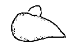
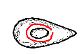
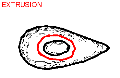
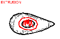
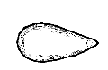
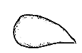
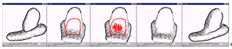

[1.Camera]
[2.Create]
[3.Paint]
[4.Extrude]
[5.Cut]
[6.Smooth]
[7.Bend]
[8.File]
Step 6: スムージング
1
2
3
4
5
6
1) 物体を生成して小さい突起をつくってください。
2) 物体を回転して、突起の周りに閉じた線を描いてください。
3) プログラムは突起生成モードに入ります。
4) ぐちゃぐちゃした線を描いてください。
5) プログラムは、もともとあった形状を取り除いて
新たに滑らかな面を生成します。
6) 回転して様子を見てください。

この操作は突起ともとの表面との間にできる
エッジを消すのにも使えます。
(ぐちゃぐちゃした線を引くときは十分
折り重なるように注意してください。)
十分練習できたら
step 7 へ
プログラムの動作がおかしくなったら、アプレットウィンドウを閉じて
Teddy を再スタート
してください。
Copyright (C) 1998
Takeo Igarashi